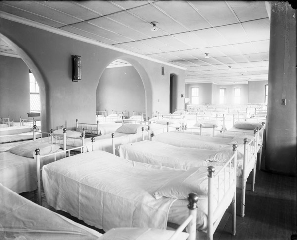

I guess I should have been excited the way most of the other girls were, but I couldn't get myself to react. I felt very still and very empty, the way the eye of a tornado must feel, moving dully along in the middle of the surrounding hullabaloo.
Sylvia Plath · The Bell Jar · p. 8